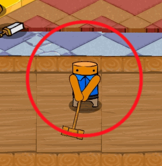
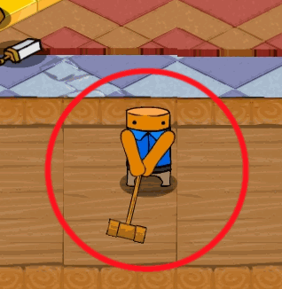
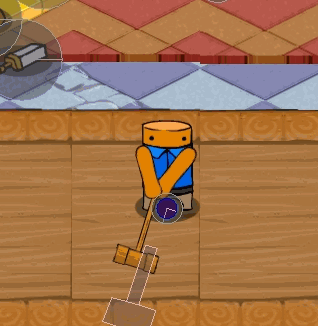

Nov 13, 2014A Silly MistakeMonths of development and hours of play testing and nobody on the team had noticed one glaring issue, the collision for hammer (and sword) was wrong. The easiest way to make sure that all of the monsters and players and walls collide at the right points is to project the collision shape onto the floor. Well apparently I forgot then when I went to implement the hammer and sword, I just mapped the physics to the visuals. The red circle below shows where the hammer will collide. This mistake gives you more range above your character and less below. The easy way to think about this is that all collision shapes are projected down to the floor, so the area the hammer will collide with should also be projected to the floor like this: Here's what the debug mode looks like with the fixed hammer, instead of following the hammer the collision shape is projected to the floor. Also note the player’s collision circle is at their feet. This was easy to fix but I thought it was interesting how easy it is to miss stuff like this and how much of a large effect it had on the game play. As an aside, some of you might notice that using a perfect circle does not match the perspective, as to use circles the camera would have to be directly above. Instead we should have used ovals that are compressed vertically. We decided to do this because we didn't want things to clump together too much vertically, also it made animating the attacks much easier. With this and screen resolutions in mind we should remember to build many of the levels left to right to take advantage of the extra space. |
There and back again, an OOP tale Basic C# Auto Updater Pillars of Eternity is broken. A Silly Mistake Tweaking The Farseer Engine London Anime and Gaming Convention Sword Controls Update Texture Bleeding MoonBus Post Mortem Optimizing drawing with Sprite Sheets (Android) Space Crazy Prototype Android resource scaler my history with programming |
contact@hernblog.com
Follow @IanMakesGames